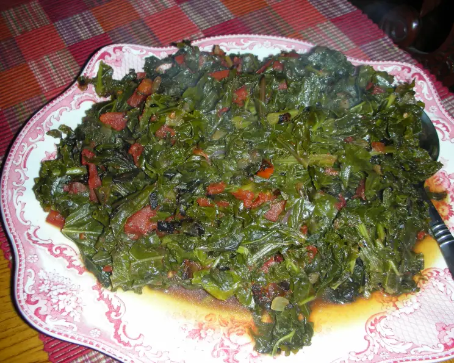

Sukuma Wiki

Description
Sukuma Wiki is a leafy green that often finds its place on
a dinner table in kenya. It is typically sautéed with onions
and tomatoes.
Ingredients
- 1 Bundle of Collard Greens
- 1 medium onion
- 2 medium tomatoes
- 2 teaspoons of oil
- Salt to taste
- 1 Tablespoon of Royco Mchuzi Mix (optional)
Steps
- Dice Onions and Tomatoes
- In frying pan, heat up the oil and then add onions
- Let Onions brownn while chopping greens
- Add chopped greens and tomatoes, mix occasionaly
- Add salt and Royco and some water
- Let reduce, then plate